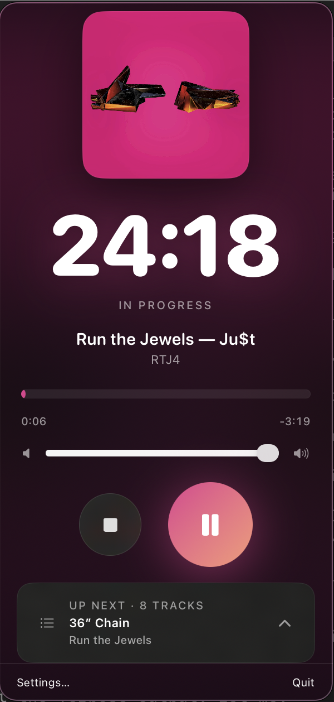
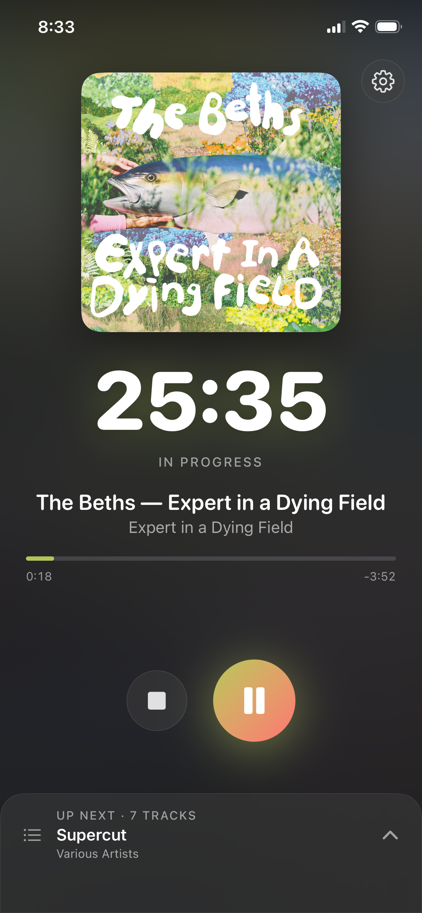

A focus timer that packs your Plex library into a playlist that hits your target length — to the minute. Pick a track. It builds the rest.
MIT licensed · Swift · No external accounts
Seed track in, a perfectly-sized focus session out.
A two-phase engine builds a playlist that fills your focus block — engineered to the minute.
Search your Plex library and drop in one track to set the vibe.
A lookahead-random then greedy-fill algorithm stacks tracks to hit your target duration — no awkward gaps.
Audio is downloaded ahead and cached. Hit start, lock your screen, disappear into the work.
Native SwiftUI, shared PlexodoroKit core, no telemetry, no accounts.
Two-phase packing nails your target session length instead of running long or cutting off.
Bundled AutoEQ presets (oratory1990 + Kazi) for ~880 headphones, with a hard-bypass toggle.
A bounded LRU disk cache downloads tracks ahead of playback so sessions never stall.
Playback survives screen lock, sleep, and route swaps on iOS via AVAudioSession handling.
Lives in your menu bar — timer, album art, volume, and controls a click away.
The same core on iPhone — a shared PlexodoroKit keeps both apps in lockstep.
One core, two native surfaces.

